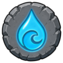

Vial of Water
Resource
| Property | Value |
|---|---|
| Value | 6 coins |
| Stacks | Yes |
Dropped by
| Monster | Level | Amount | Chance |
|---|---|---|---|
| 24 | 2–5 | 1 in 12 |
Made by
| Recipe | Level | Needs |
|---|---|---|
| 💧 Conjure Water | 🔮 Sorcery 10 |  Water Rune ×2 |
Resource
| Property | Value |
|---|---|
| Value | 6 coins |
| Stacks | Yes |
| Monster | Level | Amount | Chance |
|---|---|---|---|
| 24 | 2–5 | 1 in 12 |
| Recipe | Level | Needs |
|---|---|---|
| 💧 Conjure Water | 🔮 Sorcery 10 |  Water Rune ×2 |